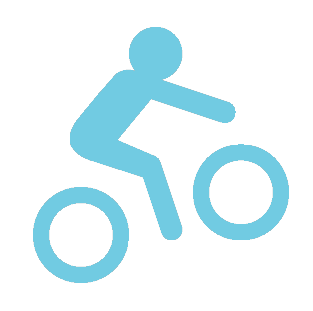

HI, I'M XI.
Like the icon I designed, I always finding and pursuing the ‘infinity within the finity’. I love exploring all kinds of new technologies to put them into real-world use to solve real challenges, like AR, VUI, machine learning, ambient visualization, crowdsourcing, blockchain, ubiquitous computing…
‘Infinity’ to me also means ‘constantly growing’. I appreciate any suggestion or feedback I could get, and also love to share my knowledge to others to contribute to the whole community. I want myself keep growing and improving. It never ends!
My background is AI, visualization and accessibility.
AI
As AI algorithms more mature, it's no longer the stuff of science fiction, it’s happening now! I felt it’s just the right time to put AI or other new technologies into real-world use to solve challenges and change the world!
For my UX design internship in Tencent (which is the largest internet company in China), I wrote the article ‘A designer’s guide to machine learning’ and also came up with new ideas for three projects. It’s just a start!
Data Visualization
During my undergraduate and UX intern in Microsoft Research Asia, I’m obsessed with designing and developing interfaces to help people better explore data to find more insights.
Accessibility
As a UX designer and researcher at Georgia tech in the past year, I realize designing for people with different abilities is more challenging! I try to think more comprehensive and gradually gain more empathy especially after deeper contact with users.
Things I love...
Design
UX and UI - Adobe Photoshop, Illustrator, InDesign, Sketch.
Photography
Instead of under cultural bias, I prefer to embrace the multiplicity of life. I believe, where there is the possibility, there is creativity.
Music
Use rhythm in piano, posture in ballet as a way to understand and express emotions. National certificated at the age of 12!

Coding
Experienced coding for iOS App in Swift, Objective C; and coding for web in JavaScript/ TypeScript, D3, PHP, HTML, CSS.
Travel
Traveling around the world has made me more open minded and broadened my perspective on the design industry.

Sports
I love all kinds of sports. I cycled 2000 km in summer with my 14 dear teammates. I’m the champion of Sit-up at University Athletic Meeting. I also love rock climbing, diving, hiking...
About This Site